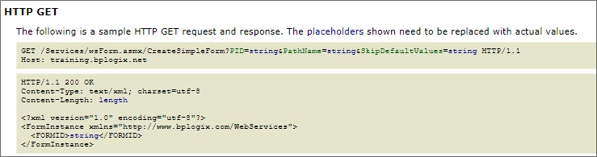

Using Web Services
This section provides a reference for calling or extending Web Services in Process Director. Documentation for each web service is located in the Available Web Services topic.
You'll need to enable the Web Services in BP Logix using the Properties page of the IT Admin area's Installation Settings section. Ensure that Web Service Enabled is set to "True". You can optionally require all Web Service calls to authenticate by setting Require Web Service Authentication to "True". When this is set, you'll need to call the Authenticate Web Service call prior to any other calls. You can optionally set the Web Service Restrictions property to a list of comma separated IP addresses that can call Web Services. If this field is set, only requests from these IP Addresses will be allowed.
Web service calls can also be made via SQL Server database triggers. The following query in SQL is an example of how to create a trigger that will make a web service call in Process Director.
USE [DatabaseName]
GO
SET ANSI_NULLS ON
GO
SET QUOTED_IDENTIFIER ON
GO
ALTER TRIGGER [dbo].[Trigger_TableName]
ON [dbo].[TableName]
AFTER INSERT
AS
BEGIN
SET NOCOUNT ON;
DECLARE @vPointer INT
EXEC sp_OACreate 'MSXML2.ServerXMLHTTP', @vPointer OUTPUT
EXEC sp_OAMethod @vPointer, 'open', NULL, 'GET', 'http://servername/
/Services/wsWorkflow.asmx/Run?WFID=wfid'
EXEC sp_OAMethod @vPointer, 'send'
EXEC sp_OADestroy @vPointer
END
For confirmation of the web services call, you can declare some additional fields if you want and change the last few lines to:
EXEC sp_OAMethod @vPointer, 'responseText'
EXEC sp_OAMethod @vPointer, 'Status', @vStatus OUTPUT
EXEC sp_OAMethod @vPointer, 'StatusText', @vStatusText OUTPUT
EXEC sp_OADestroy @vPointer
SELECT @vStatus AS Status, @vStatusText AS StatusText,
@vResponseText AS Response
REST Services #
Microsoft natively provides a non-SOAP (REST) interface to some web services, if the service requires no parameters, or only parameters of the primitive types bool, int, or string. To check to see if a particular web service supports a REST interface, you can navigate to the service page for a web service, e.g., the "services/wsForm.asmx" page, and click on one of the web service calls. If the web service call provides an "HTTP GET" operation, then it can use a REST call to run the service. This isn't a feature that is managed or edited by BP Logix; it is a native feature of web services that has been implemented by Microsoft, and is subject to change at their discretion.

You can call these services via with the standard HTTP GET protocol (using a simple URL). A custom variable, fWebServiceAllowCredentialsURL is set to "true" as a default, to allow credentials to be passed on the URL.
REST URLs should be in the following format:
http://RESTServiceURL?parameterName=parameterValue&otherParam=otherValue
The “bpUserId” and “bpPassword” parameters are necessary to authenticate with Process Director when using REST APIs. The credentials you pass can be for any user that has permission to invoke a Web Service, irrespective of whether that user is a System Administrator.
 Be advised that using the bpUSERID or bpPassword parameter requires sending the User ID and Password in clear text, so be mindful of the security implications of transmitting these values and limit the calls to the localhost. Secure the rest calls using the IP address white list in the installation settings.
Be advised that using the bpUSERID or bpPassword parameter requires sending the User ID and Password in clear text, so be mindful of the security implications of transmitting these values and limit the calls to the localhost. Secure the rest calls using the IP address white list in the installation settings.
Other REST Services
In addition to the built-in REST services in Process Director, implementers can also use Business Values to retrieve and use REST data in any desired context. Additionally, two Web Service Custom Tasks to retrieve REST data from any accessible REST web service to Fill Fields or Fill Dropdowns with REST data.
For more information about accessing and using external REST services, please refer to the REST Services topic.
Web Service Authentication Settings #
A web service call can be made without requiring authentication if the web service is being called from a source that is listed as a “Local IP Address” in the installation settings in Process Director.
If an IP address is listed in the “Web Service Restrictions” than web service calls can only be made from those IP addresses.

Extending BP Logix Web Services #
You can also write new or extend the web services provided by BP Logix by developing your own custom .ASMX pages in the custom folder. Your new Web Service, for example, can be a “proxy” to a remote web service that takes a parameter list that the Web Service Custom Tasks support. Or you can provide Web Services that search for and return custom data.
See the sample in the /custom/samples/SampleService.asmx.sample file. Notice that the Web Service is derived from the bpWebService class. This enables you to call any BP Logix SDK API from the new Web Service.
To extend BP Logix Web Services inside Visual Studio, use the fully functional Visual Studio project installed with the product named bpVS.zip. Refer to the sample file SampleService.asmx.
Calling Other Web Services #
The easiest way to call Web Services provided by other Enterprise Applications is to use the Web Service Custom Task. This Custom Task enables you to call a remote Web Service without writing any code. You can map the inputs and outputs of the Web Service call to Form Fields, system variables, or custom variables.
Additionally, you can use any .NET language to call other Web Services. To do this, use the .NET WSDL compiler to generate the proxy code for the Web Service. Then package the proxy into a .DLL and place it into the /Bin folder of the BP Logix application. Your custom Form, Workflow, or Knowledge View scripts can then call these Web Services.